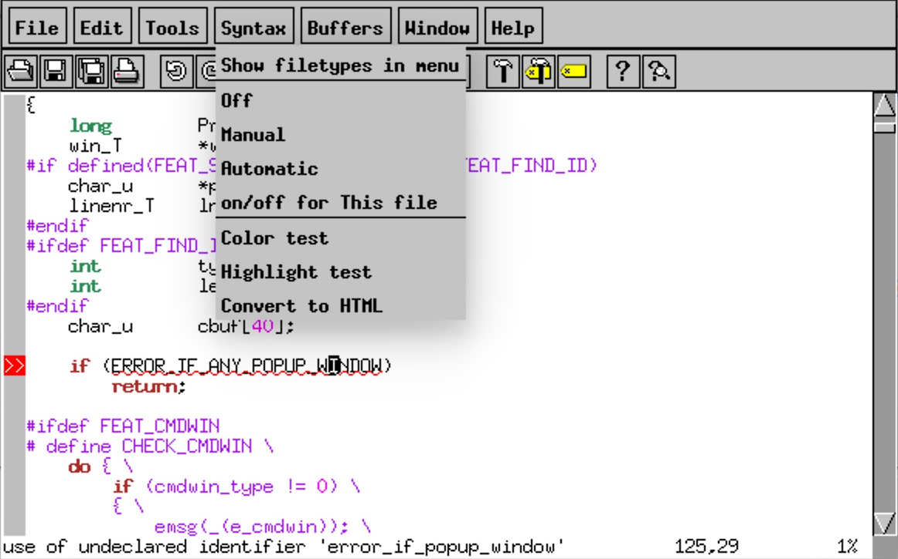
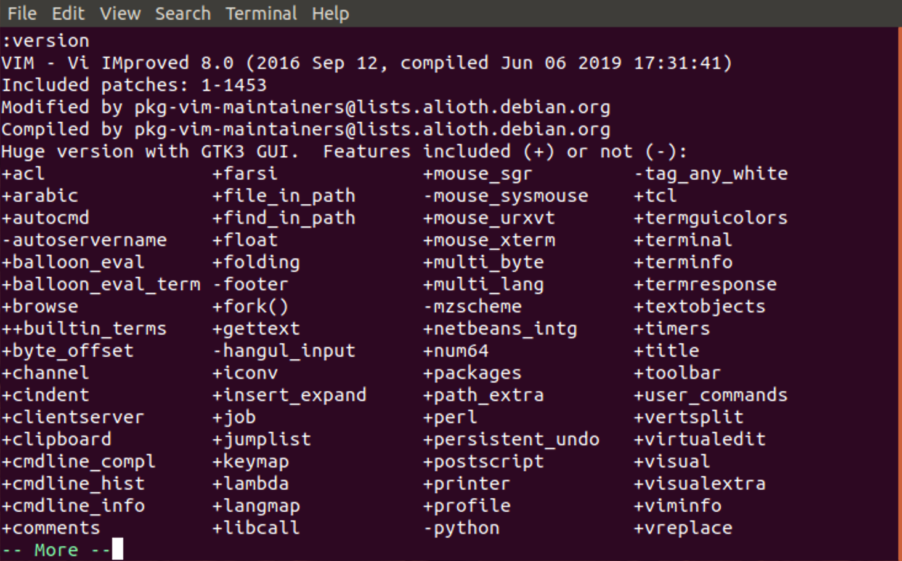
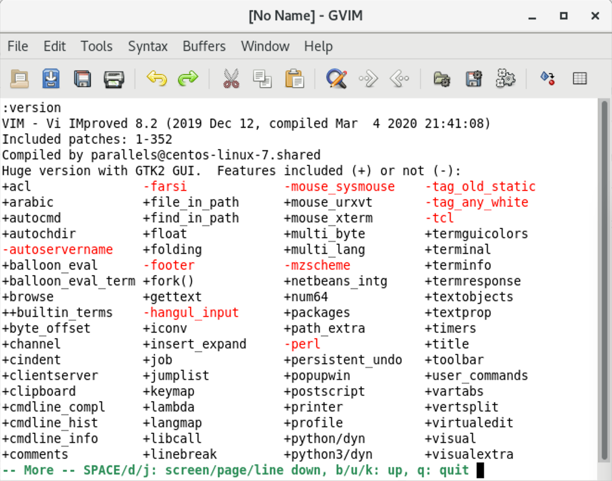
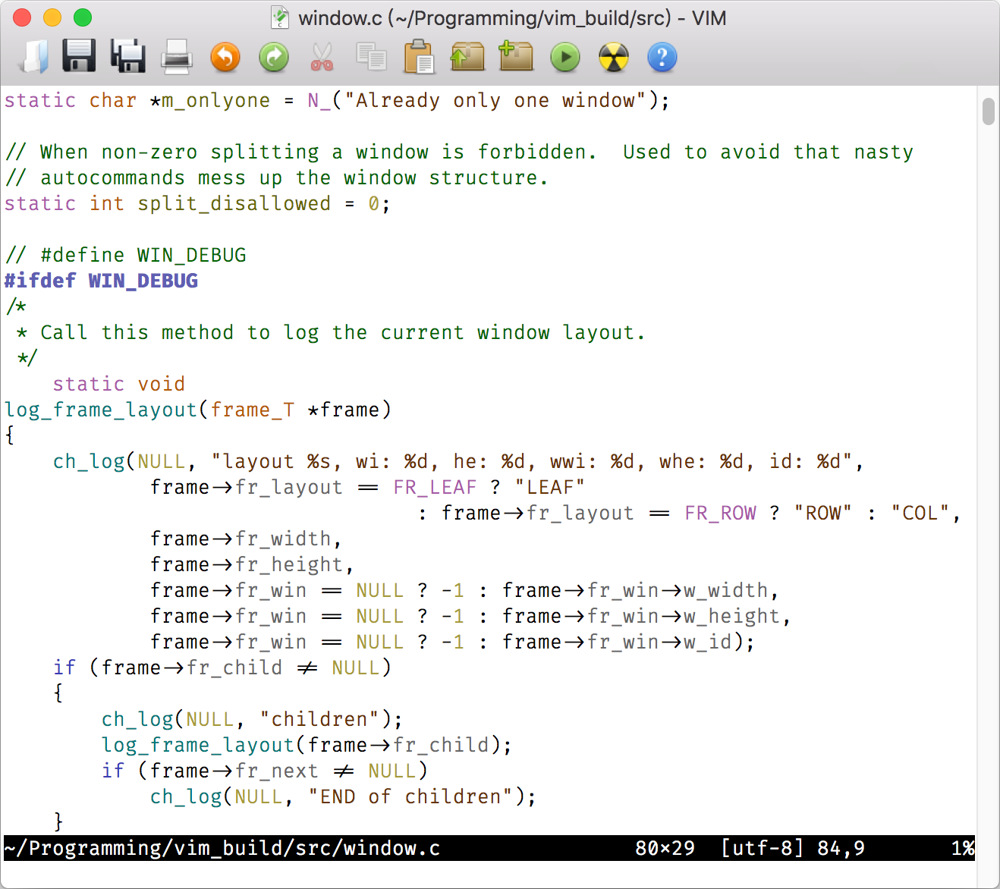
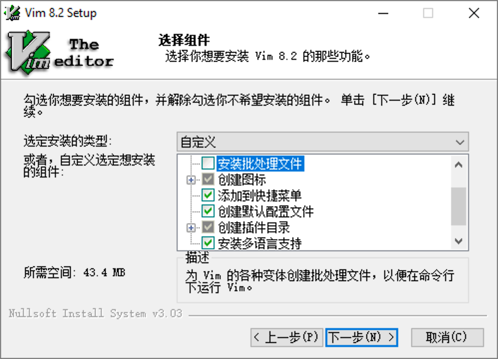
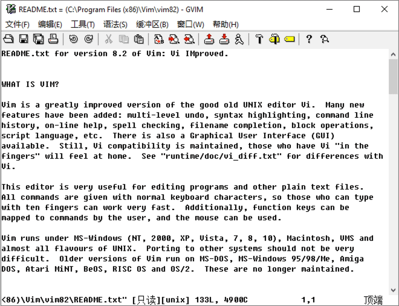
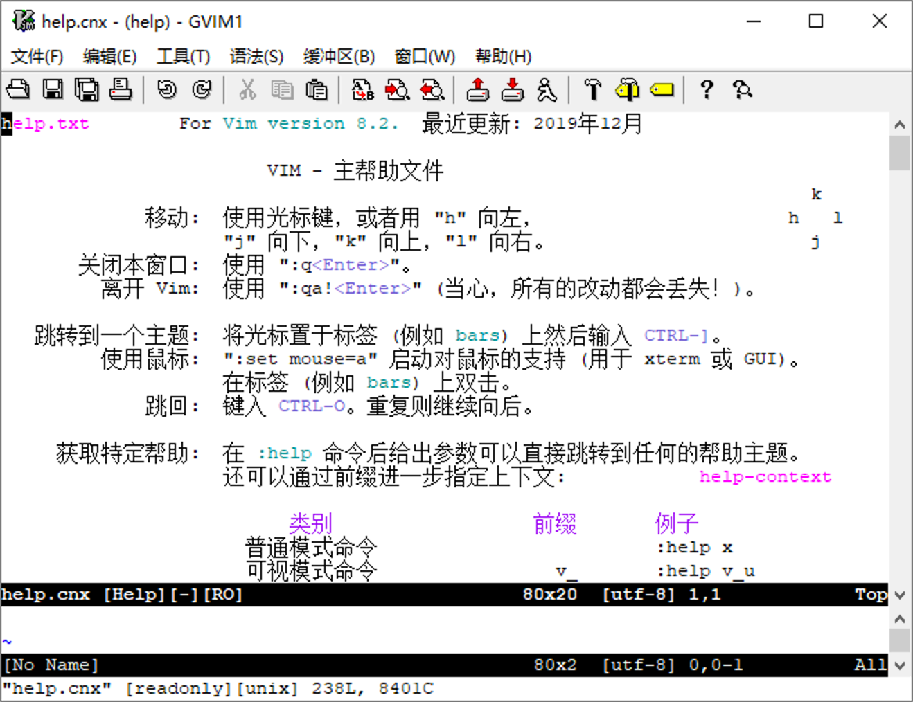
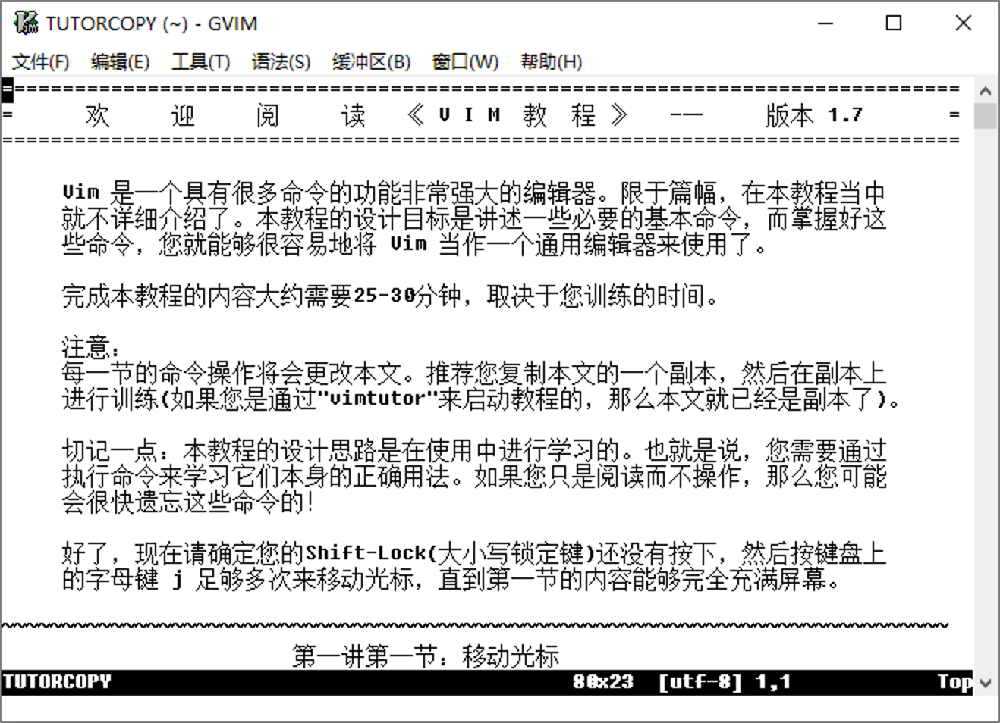

- 00 导读 池建强：Vim 就是四个字“唯快不破”.md.html
- 00 开篇词 我们为什么要学 Vim？.md.html
- 01 各平台下的 Vim 安装方法：上路前准备好你的宝马.md.html
- 02 基本概念和基础命令：应对简单的编辑任务.md.html
- 03 更多常用命令：应对稍复杂的编辑任务.md.html
- 04 初步定制：让你的 Vim 更顺手.md.html
- 05 多文件打开与缓冲区：复制粘贴的正确姿势.md.html
- 06 窗口和标签页：修改、对比多个文件的正确姿势.md.html
- 07 正则表达式：实现文件内容的搜索和替换.md.html
- 08 基本编程支持：规避、解决编程时的常见问题.md.html
- 09 七大常用技巧：让编辑效率再上一个台阶.md.html
- 10 代码重构实验：在实战中提高编辑熟练度.md.html
- 11 文本的细节：关于字符、编码、行你所需要知道的一切.md.html
- 12 语法加亮和配色方案：颜即正义.md.html
- 13 YouCompleteMe：Vim 里的自动完成.md.html
- 14 Vim 脚本简介：开始你的深度定制.md.html
- 15 插件荟萃：不可或缺的插件.md.html
- 16 终端和 GDB 支持：不离开 Vim 完成开发任务.md.html
- 拓展1 纯文本编辑：使用 Vim 书写中英文文档.md.html
- 拓展2 C 程序员的 Vim 工作环境：C 代码的搜索、提示和自动完成.md.html
- 拓展3 Python 程序员的 Vim 工作环境：完整的 Python 开发环境.md.html
- 拓展4 插件样例分析：自己动手改进插件.md.html
- 拓展5 其他插件和技巧：吴咏炜的箱底私藏.md.html
- 结束语 Vim 森林探秘，一切才刚刚开始.md.html
- 捐赠
01 各平台下的 Vim 安装方法：上路前准备好你的宝马
你好，我是吴咏炜。
今天第一讲，我们先来讨论一下 Vim 在 Linux、macOS、Windows 系统下的安装和配置问题。
Vim 在 Linux 和 macOS 上一般是默认安装的，在 Windows 上不是。不过 Vim 的网站上提供了 Windows 下的安装包，自己安装也很容易。所以，今天的课程我不会手把手、一步步地讲，而是挑选一些重点。对于默认安装的情况，主要讨论的是版本老旧或功能不全的问题。对于其他情况，我则会给出一个基本指引，减少你走弯路的可能性。
好了，下面我们就分各个不同的平台，一一来看。
Linux 下的安装
Red Hat 和 CentOS 系列
在 Red Hat Linux 和 CentOS Linux 上，默认安装的 Vim 可能是一个最小功能的版本。虽然这个版本启动速度很快，但它缺少了很多对开发有用的功能，如语法加亮、Python 集成和图形界面。一般情况下，应至少安装更全功能版本的 Vim；如果能使用 X Window 的话，则应安装图形界面版本。
你可以通过下面的命令来查看已经安装的 Vim 版本：
yum list installed | grep vim
如果输出只有下面这样的内容的话，就说明安装的 Vim 版本只有基本功能：
vim-minimal.x86_64 2:8.0.1763-13.el8 @System
此时，我建议使用 sudo yum install vim-X11 来安装图形界面的 Vim，或至少使用 sudo yum install vim-enhanced 来安装增强版本的 Vim（如果你不在这台机器上进行图形界面登录的话）。
只要你使用图形界面，一般而言，你都应该安装有图形界面支持的 Vim。总体而言，图形界面 Vim 的功能更丰富，并且即使你只在终端里使用 Vim，含图形界面支持的 Vim 会带剪贴板支持，跟整个图形环境的交互也就比较容易。当然，如果你只是远程通过 SSH 使用 Vim 的话，那确实图形界面支持就没有意义了。
Debian 和 Ubuntu 系列
在 Debian、Ubuntu 等使用 apt 的 Linux 发行版上，Vim 同样有着不同功能版本的区别，而且选择更多。我们可能会看到：
- vim
- vim-athena
- vim-gnome
- vim-gtk
- vim-gtk3
- vim-nox
- vim-tiny
它们中有编译进最小功能的 Vim 包（vim-tiny），有较全功能的文本界面 Vim 包（vim-nox），有适用于老的 X-Window 界面的版本（vim-athena），有适用于 KDE 环境的 GTK2 版本（vim-gtk），等等。

如果你不确定要装什么版本的话，那可以遵循我下面的建议：
- 如果你使用标准的 GNOME 桌面环境的话（大部分的情况），安装 vim-gtk3 或 vim-gnome。
- 如果你使用 KDE 桌面的话，安装 vim-gtk。
- 如果你只使用文本界面的话，安装 vim-nox。
- 都不是？那你是个爱自己定制的家伙，也就不需要我告诉你该安装什么了。
你可以通过下面的命令来查看已经安装的 Vim 版本：
apt list --installed | grep vim
我们先执行 sudo apt update 来确保更新环境，然后使用 sudo apt install vim-gtk3 安装 GTK3 版本的 Vim（或者其他你需要的版本）。如果你安装了图形界面的版本，不必单独再另外安装其他版本的 Vim，因为图形版本的 Vim 也是可以纯文本启动的。事实上，在 Ubuntu 上，vim 和 gvim 都是指向同一个应用程序的符号链接，且 gvim 的执行效果和 vim -g 相同。

手工编译
如果你用的 Linux 发行版较老的话，你可能会希望手工编译 Vim 来得到最新的版本。此时需要注意的是，Vim 有很多的编译配置选项，有些缺省是不打开的。对于这个课程来讲，我们会希望至少加上 Python 支持和图形界面支持。
你首先需要确保自己已经安装了所需的开发包（可以参考这个网上的回答）。然后，我们可以使用下面的命令来配置 Vim 和编译（根据需要，“auto”也可以替换成“gtk3”等其他需要的数值）：
./configure --enable-pythoninterp \
--enable-python3interp \
--enable-gui=auto
make -j
sudo make install
如果上述步骤正常没有出错，Vim就被成功安装到 /usr/local 下了。你可以用 which vim 来检查系统是否会自动优先选择你的 vim：如果不是的话，你可能需要调整 PATH 里的顺序，或者设置别名来优先启动 /usr/local/bin/vim）。然后，你可以使用 vim --version 命令来输出 vim 的版本信息。我们希望能在输出里看到：
Huge version with … GUI- +python/dyn- +python3/dyn
目前 Python 2 已经停止支持，所以你最好可以确保上面的输出中包含“+python3”（很多 Vim 的插件已经开始要求 Python 3、不再支持 Python 2 了）；没有“+python”（即 Python 2）则没什么关系（有没有“dyn”关系也不大）。

好了，关于 Linux 环境下的Vim安装和配置要点我们就讲完了，接下来继续看在 macOS 上如何安装。
macOS 下的安装
在 macOS 中一般已经内置了 vim，并提供了除图形界面外的较完整功能集。如果你希望使用图形界面，则需要自行安装 MacVim，一个跟现代 macOS 融合较好的独立 Vim 版本。安装 MacVim 有两种常用方式：
- 使用 Homebrew。我推荐你使用这种方式，这样的话，以后升级也会比较容易。
- 使用 MacVim 的独立安装包。如果你之前没有在用 Homebrew 的话，或处于不方便使用 Homebrew 的网络环境中，这种方式也可以。
由于使用 Homebrew 已经足够简单，日后升级也非常方便，我个人觉得我们没必要自己去编译 MacVim。

使用 Homebrew 安装 MacVim
首先，如果你没有 Homebrew，那你需要先安装 Homebrew。安装信息可以在 Homebrew 的主页上找到（这个网站是支持中文的）。
在安装了 Homebrew 之后，一般情况下，你需要修改你的 .bash_profile（如果使用 Bash 的话）、.zprofile（如果使用 Zsh 的话）或是相应的 shell 的配置文件，调整 PATH，把 /usr/local/bin 放到 /usr/bin 前面。我个人在 .bash_profile 里是这样配置的：
if [[ $PATH != "$HOME/bin"* ]]; then
PATH=~/bin:/usr/local/bin:/usr/local/sbin:`echo $PATH|sed -e "s!:$HOME/bin!!" -e 's!:/usr/local/bin!!'`
fi
这样，可以确保个人的路径优先于 /usr/local，而 /usr/local 下的路径又优先于系统的路径。
如果你这样配置的话，那只要执行 brew install macvim，然后在等待安装完成之后，你用 vim 启动的就是 MacVim 了。缺省用 vim 运行的仍然是纯文本界面的 Vim，但跟 Linux 一样，你可以用 vim -g 或 gvim（还有仅用在 Mac 上的 mvim）来启动 Vim 的图形界面。
跟 Homebrew 里的其他软件一样，你以后要升级 MacVim 的话，只需要输入命令 brew upgrade macvim 即可。是不是很简单？这就是为什么我比较推荐这种安装方式，后期升级真的更容易。不过我下面还是会介绍下安装包的方式，以满足我们不同的应用需求。
使用安装包安装 MacVim
跟大部分的 Mac 软件一样，你也可以直接使用 DMG 安装包来安装 MacVim。目前可从以下网址下载 MacVim 的安装包：
https://github.com/macvim-dev/macvim/releases
等待下载完成后，双击下载的文件，然后会打开一个访达（Finder）窗口。你只需要把 MacVim 拖拽复制到应用程序文件夹即可。
在这种安装方式下，手工键入 vim、gvim 或 mvim 命令是无法启动 MacVim 的。你需要手工创建这些命令的符号链接（symlink）或别名（alias）才行。假设你的 MacVim 是直接安装在应用程序文件夹里的话，这些命令本身可以在 /Applications/MacVim.app/Contents/bin 文件夹里找到；使用下面的命令可以在你自己的 bin 目录下创建这些命令的符号链接：
[ -d ~/bin ] || mkdir ~/bin
ln -s /Applications/MacVim.app/Contents/bin/* ~/bin/
Windows 下的安装
最后，我们来看在 Windows 下怎么安装。课程开头我提到了，Windows 上缺省是没有 Vim 的。我们可以从 Vim 的网站下载 Windows 下的安装包：
https://www.vim.org/download.php#pc
在 Linux 和 macOS 上，64 位应用程序已经成为主流。而与此不同的是，在 64 位Windows上，32 位应用程序仍然很常见。默认的 Vim 8 的安装包安装的仍然是一个 32 位的应用程序。不过，32 位的 Vim 也足够满足一般需求了，除非你需要编辑 2 GB 以上的大文件。
安装界面会有一个选择组件的步骤，如下图所示：

这个界面中，下面几项我们可以关注一下：
- “安装批处理文件”（Create .bat files）：对于用 Vim 的开发者来说，通常命令行是刚需，所以我们一般需要勾上这项。
- “创建图标”（Create icons for Vim）：根据你自己的需要进行选择，通常我会去掉展开子项里的“桌面图标”（On the Desktop），不在桌面上创建 Vim 的图标。
- “创建默认配置文件”（Create Default Config）：去掉这项——我们马上会创建配置文件。
- “安装多语言支持”（Native Language Support）：这项功能使得 Vim 的菜单可以显示中文的命令，但实际上还是有点鸡肋，因为 Vim 的主要功能不是靠菜单驱动的，安装程序安装的帮助文件也只有英文版。所以，这项选和不选关系不大，你可以自由选择。
然后我们点“下一步”（Next），不需要修改安装目标文件夹，完成安装即可。
完成安装后，Vim 会缺省打开一个 README 文件。在这个窗口中，我们应当键入“:e ~_vimrc”，回车键，然后把下面的内容粘贴进去（这些配置项的意义我们以后会讨论）：
set enc=utf-8
set nocompatible
source $VIMRUNTIME/vimrc_example.vim
然后键入“ZZ”（大写）存盘退出即可。

注意由于历史上的文件系统限制，在 Windows 下 Vim 的配置文件名称是 _vimrc 而不是 .vimrc（虽然 Windows 命令行不支持像 Unix 一样用“”代表用户的主目录，在 Vim 里我们仍然可以使用“\_vimrc”或“~/_vimrc”这样的写法）。这是 Unix 和 Windows 下的 Vim 配置的区别之一。其他的主要区别是以下两点：
- 点打头的 Vim 文件都成了“_”打头，如 .viminfo 也成了 _viminfo
- 点打头的 Vim 配置目录 .vim 在 Windows 下则成了 vimfiles
除此之外，Vim 的配置在 Windows 下和 Unix 下（如 Linux 和 macOS）并没有根本不同。Windows 上的主要麻烦在于，由于 Vim 的生态主要在 Unix 上，某些 Vim 的插件在 Windows 上安装配置需要花费更大的力气。但就一般的文本和程序编辑而言，Vim 在 Windows 下和 Linux 下没有本质的不同。甚至 Windows 下还有一个小小的优势：Unix 下虽然 Vim 可以编译成支持 Python 2 和 Python 3，但在 Vim 里一旦执行了 Python 2 的代码，就不能再执行 Python 3 的代码了；反之亦然。Windows 下则没有这个限制。
有没有注意到我只在 Windows 的安装部分讨论了配置？这是因为 Unix 下主流的缺省编码已经是 UTF-8 了，而 Vim 只能在内码是 UTF-8 的情况下才能处理多语言的文本。而我们有自己的配置文件，是为了确保启用一些最为基本的配置选项，来保证基本行为的一致性。
Windows 上可以把 Vim 配置成跟普通的编辑器行为差不多，包括支持 Ctrl-A 全选，选择内容后输入任何内容替换选择的内容，等等。但是，这种行为跟 Vim 的标准行为是冲突的。我们要学习 Vim，还是忘了这些 Windows 特有的功能为好，去学习掌握 Vim 的跨平台标准功能。上面的配置文件也同样没有启用 Windows 下的特有行为。
Cygwin/MSYS2
Windows 有 Cygwin 和 MSYS2，可以提供类似于 Linux 的 POSIX shell。在这些环境里，Vim 都是标准组件，按这些环境的标准方式来安装 Vim 就行。如果你使用 Git Bash 的话，里面就直接包含了 MSYS2 的终端、Bash 和 Vim。唯一需要提一句的是，这些类 POSIX 环境里面的 Vim 配置应当参照 Linux 终端来，而不是 Windows 下的标准方式（也就是说，个人配置目录和配置文件是 .vim 和 .vimrc，而非 vimfiles 和 _vimrc）。我以后对这种情况就不再单独描述了。
远程使用 Vim
还有一种常用的环境恐怕是使用 mintty、PuTTY、SecureCRT 之类的软件在 Windows 上远程连接到 Linux 机器上。在这种情况下，需要特别注意的，是远程终端软件的远程字符集（如 PuTTY 中的“Windows > Translation > Remote character set”）应当设置成 UTF-8。这个设定跟具体的软件及其版本有关，我就不详细说明了；请自行查看你所使用的远程终端软件的设定和相关文档。
学习 Vim
上面我们讲解了 Vim 的安装。如果安装过程中遇到了什么问题，可以留言提问。接下来，我会给你提供一些 Vim 的学习资料，帮助你进入 Vim 的世界。你应该仔细看一下你所使用的平台上的 Vim 安装信息（其他平台的可以略过），并且应该自己打开 Vim 教程练习一遍（除非这些基础知识你都了解了）。键盘配置相关信息属于可选，可以根据自己的兴趣和需要决定是否了解一下。
中文帮助文件
Vim 内置了完整的英文帮助文件。如果你想要中文帮助文件的话，有个好消息是，有网友同步翻译了最新的帮助文件，而且安装过程在 Vim 8 （或将来的版本）里是非常简单的。以 Unix 下为例（Windows 下类似，但路径 .vim 需要修改为 vimfiles）：
cd ~/.vim
mkdir -p pack/my/start
git clone https://github.com/yianwillis/vimcdoc.git pack/my/start/vimcdoc
如果你不需要以后利用 Git 来快速升级文档的话， 也可以在这个 Vim 中文文档计划的下载页面下载 tar 包，然后自行解压到 ~/.vim/pack/my/start 目录下（或 Windows 用户目录下的 vimfiles\pack\my\start 目录下）。
Windows 用户有一个简单的安装程序（当前为 vimcdoc-2.3.0-setup-unicode.exe），可以自动帮你完成中文帮助文件的安装任务。如果你的机器上没有 git 和 tar 可执行程序的话，那这个方式最简单。

Vim 教程
Vim 在安装中自带了一个教程，可供快速入手使用。如果你对 Vim 的基本操作不熟的话，建议你完整学习一下，我也就不必多费笔墨介绍一些最基础的用法了。
Vim 教程支持多语言，可使用命令 vimtutor 来启动。如果启动的教程的语言不是你希望的，你可以使用环境变量 LANG 来设定希望的语言。比如，下面的命令可以在 Unix 环境中启动一个中文的 Vim 教程：
LANG=zh_CN.UTF-8 vimtutor
Windows 下你可以在开始菜单里找到 Vim tutor。但我测试下来它有一个问题。虽然我提交的解决方法已经作为补丁（8.2.0412）合并，但目前（Vim 8.2）安装程序安装的文件多半仍然是有问题的，你会无法成功地创建一个 tutor 文件的副本供编辑使用。我建议手工创建一个这个教程的副本。可以在命令提示符下输入：
vim --clean -c "e $VIMRUNTIME/tutor/tutor.zh_cn.utf-8" -c "w! TUTORCOPY" -c "q"
这样即可在当前目录下创建一个教程的副本。然后我们可以用 gvim TUTORCOPY 来打开这个副本进行学习。

键盘重配置
最后，有些重度的 Vim 用户会重新配置键盘，把使用频度较低的大写锁定键（Caps Lock）重新映射成 Esc 或 Ctrl 键。对于这个问题，如果你需要的话，网上很容易就能找到攻略，如：
- Linux下将大写锁定键(CapsLock)键映射为Ctrl键(Ubuntu, Manjaro，CentOS)
- mac book更改caps lock键为esc键/ctrl键
- windows交换大写锁定键与ESC键（注册表修改）
- 在任何操作系统上，如何禁用或者重新分配 Caps Lock键
这当然是一件非常个人化的事情，而且有一个风险，你一旦跑到别人的机器上操作，你的“肌肉记忆”可能会让你常常按错键。鉴于你目前可能只是个 Vim 的初学者，现在不一定需要这么去做。等到你觉得按 Esc 太麻烦了，再想起这个可能性去修改键盘配置也来得及。
内容小结
今天我们讨论了 Vim 在常见平台上的安装过程。顺便说一句，以后在牵涉到环境问题时，我一般也会以上面提到的几种典型情况为例来进行讲解：
- Linux（CentOS 和 Ubuntu）
- macOS
- Windows
你可能看着多个平台的安装过程有点晕，这却是我的实际使用环境了——我就是在各个平台下都安装、配置、使用着 Vim 的，这也就是 Vim 的全平台、跨平台优势了。
当然，必须得承认，Vim 还是最适合类 Unix 环境，它的生态系统也是在类 Unix 环境下最好。鉴于在 Windows 下已经越来越容易接触到类 Unix 环境（像 Git Bash、Docker 和 Windows Subsystem for Linux），服务器开发上 Linux 也已经成了主流，在 Windows 上熟悉 Vim 的完整环境对你也应该是件好事——尤其如果你是做服务器或嵌入式开发的话。
下一讲，我们就会进一步学习一下 Vim 的基本概念和配置。
课后练习
如果你之前不常使用 Vim ，请务必花点时间看一下 Vim 教程。在下一讲开始时，我将会假设你已经掌握了 Vim 教程里的基本用法。
当然，如果有任何问题的话，可以在讨论区留言和我进行交流。
我是吴咏炜，我们下一讲再见。
© 2019 - 2023 Liangliang Lee. Powered by gin and hexo-theme-book.